Uozu, Toyama: things to do, food and stays
Uozu · Toyama
Uozu
Highlighted on the Toyama map.

Stay
ホテルグランミラージュ
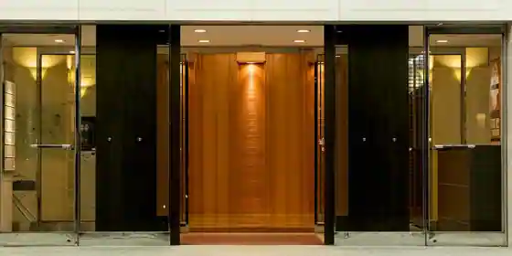
Hotel Guranmiraju
魚津マンテンホテル駅前（マンテンホテルグループ）
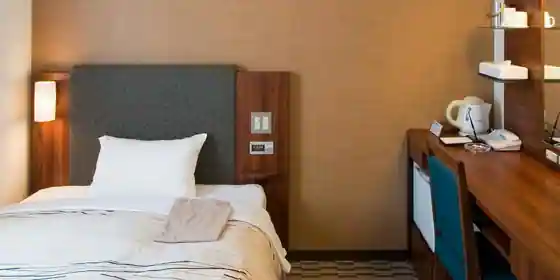
Uozu Manten Hotel Ekimae (Manten Hotel Gurupu)
Hotel in Shakado, Uozu with open-air baths and a sauna.
北陸 富山 日本の名湯 金太郎温泉 光風閣
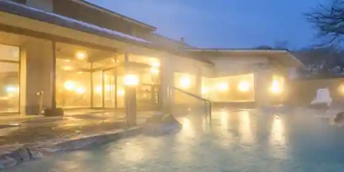
Hokuriku Toyama Nippon No Meito Kintaro Onsen Kofu Kaku
Inn at Kintaro Onsen in Tenjinnoshin, Uozu with free-flowing hot spring baths.
ホテルルートイン魚津
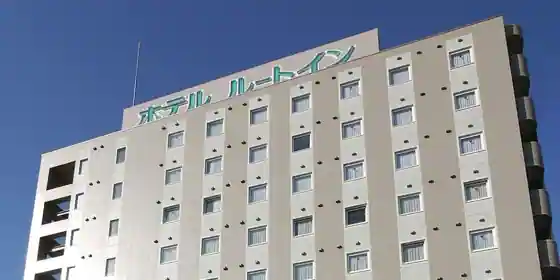
Hotel Route Inn Uozu
Hotel in Kamimuraki, Uozu with Wi-Fi.
お宿 いけがみ
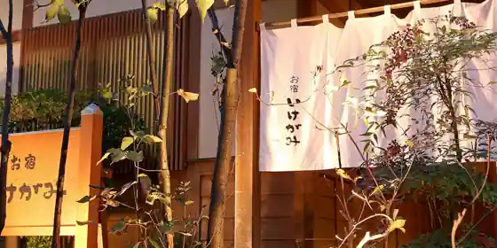
O Yado Ikegami
HOTEL R9 The Yard 魚津
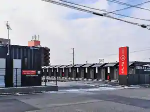
HOTEL R9 The Yard Uozu
アパホテル〈魚津駅前〉
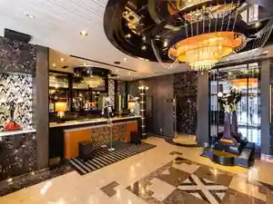
APA Hotel < Uozu Ekimae >
Hotel in Shakado, Uozu with Wi-Fi and parking.
ビジネスホテル美浪
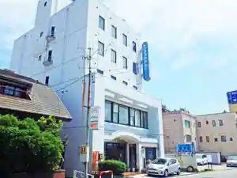
Business Hotel Bi Nami
Hotel in Shakado, Uozu with parking and business travelers; 1-minute walk from Uozu Station.
スカイホテル魚津
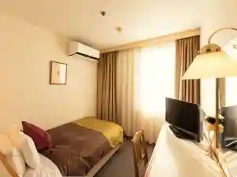
Sukai Hotel Uozu
Hotel in Ekimaeshin, Uozu with business travelers.
スカイホテル魚津アネックス
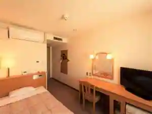
Sukai Hotel Uozu Anekkusu
Hotel in Ekimaeshin, Uozu with business travelers.
辻わくわくランド 民宿茶弥
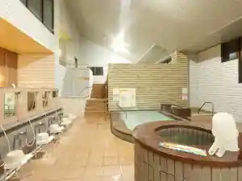
Tsuji Wakuwaku Rando Minshuku Cha Ya
ベストイン魚津
Besutoin Uozu
Inn in Yoshijima, Uozu with breakfast available and parking.
Dining
鮨 大門
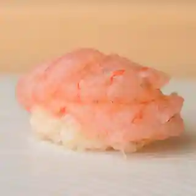
Sushi Daimon
はじめ家
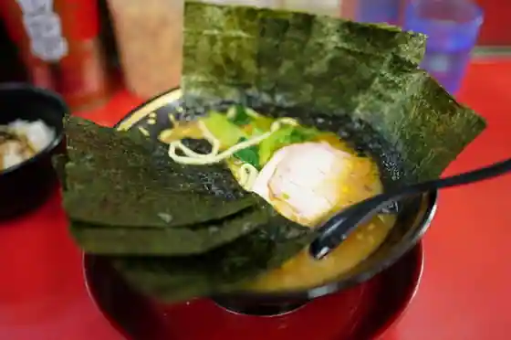
Hajime Ie
魚づ鱒寿し店
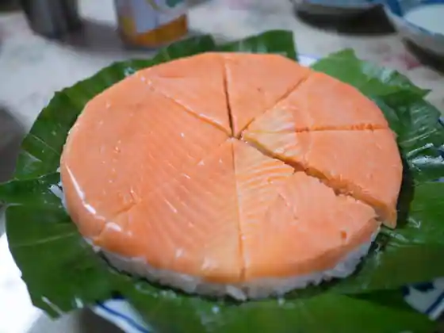
Sakana Zu Masu Hisashi Shi
太助鮨
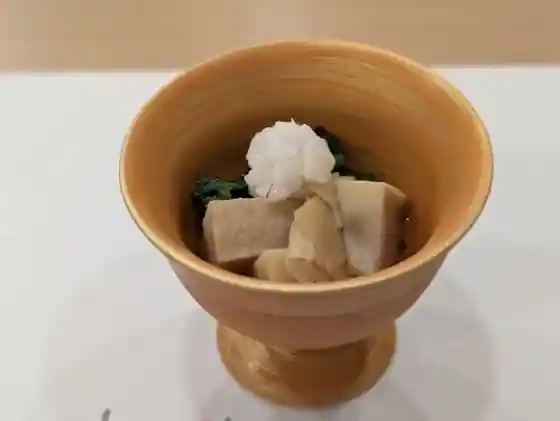
Tasuke Sushi
海風亭
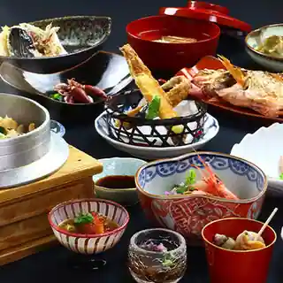
Umikaze Tei
小政寿司
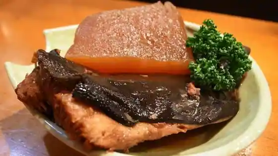
Komasa Sushi
やまや
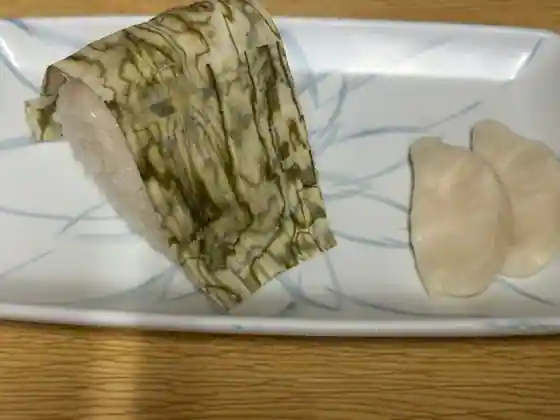
Yamaya
山久ラーメン
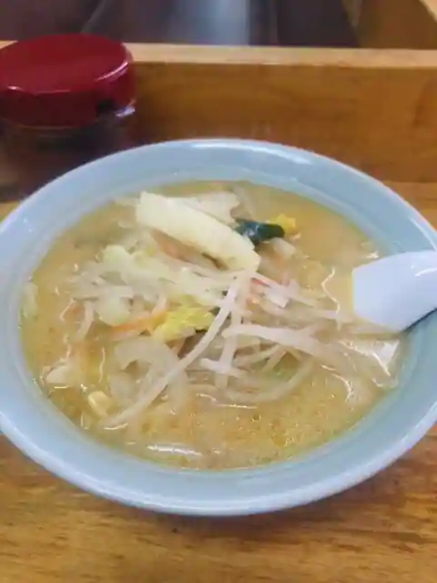
Yama Kyu Ramen
魚津丸食堂
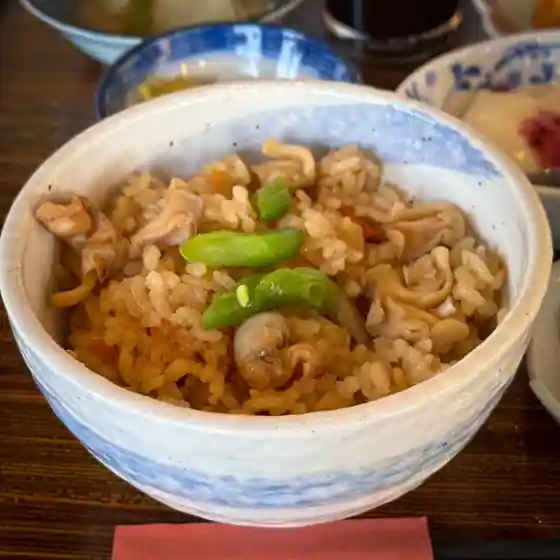
Uozu Maru Shokudo
キニナル 魚津埋没林博物館店
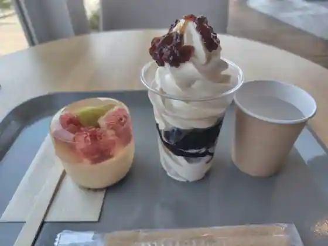
Kininaru Uozu Maibotsu Hayashi Hakubutsukan
二星製麺所 魚津店
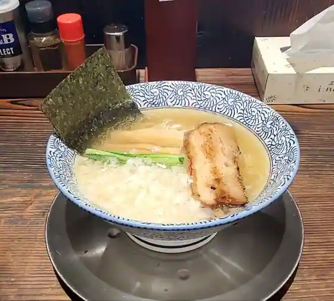
Ni Hoshi Seimen Tokoro Uozu
源助
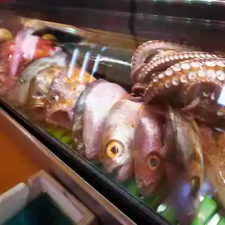
Gensuke
有磯海サービスエリア(下り) UMI TOYAMA
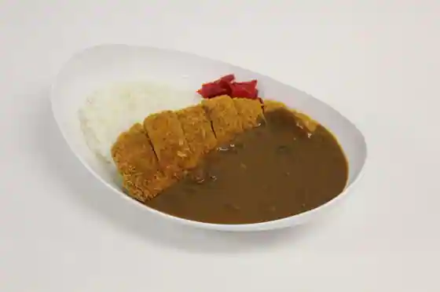
Ariso Umi Sabisueria (Kudari) UMI TOYAMA
ラーメン むてっぽう 魚津店
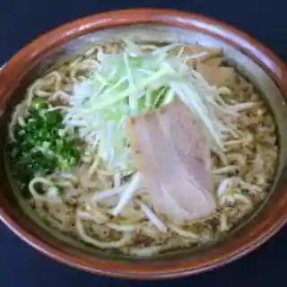
Ramen Muteppo Uozu
鮨蒲本舗 河内屋
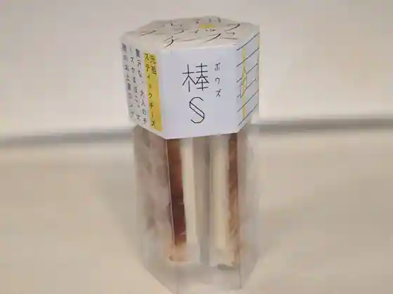
Sushi Kama Honpo Kawauchi Ya
ヌードルハーツ
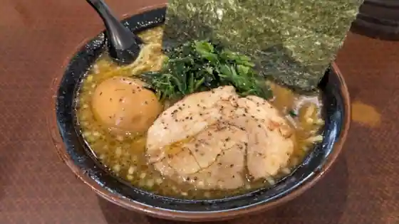
Nudoruhatsu
水だんご専門店 藤吉
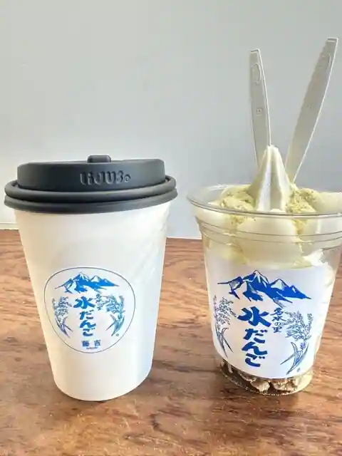
Mizu Ta Nko Senmon Tokichi
とんかつや
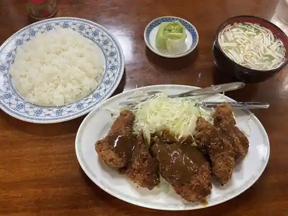
Tonkatsuya
増重
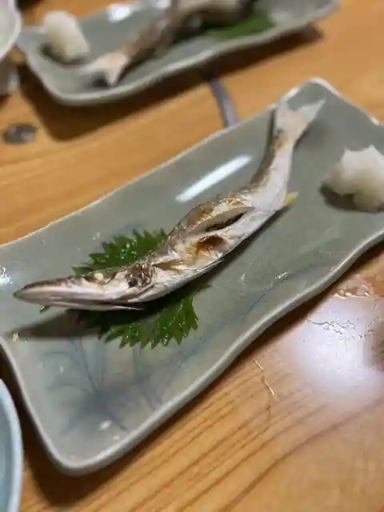
Zo Ju
天地人
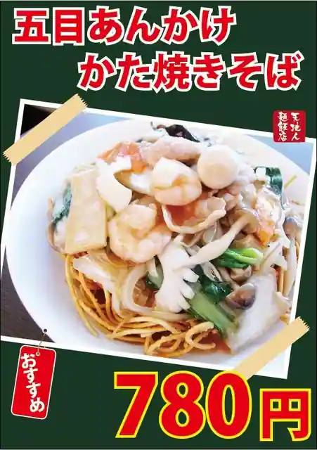
Tenchi Nin
金太郎温泉
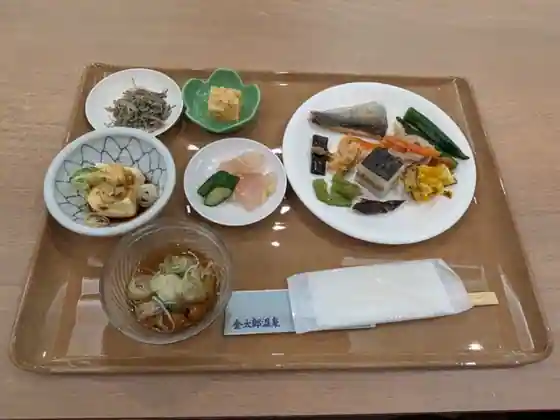
Kintaro Onsen
海の駅 蜃気楼
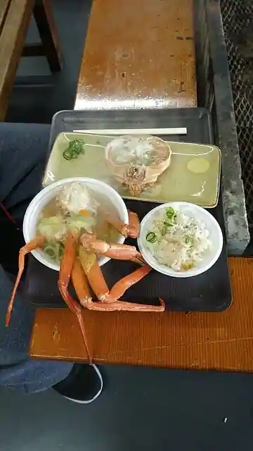
Umi No Eki Shinkiro
インディラ
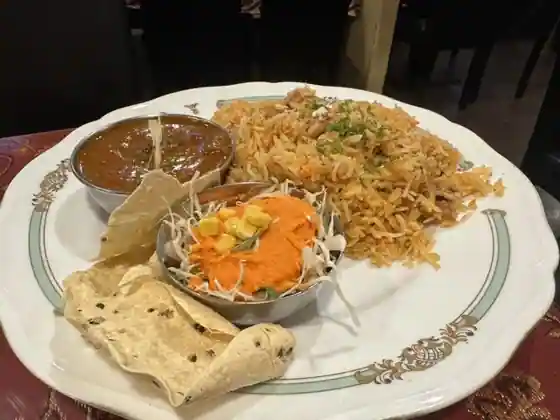
Indira
八っ寸亭
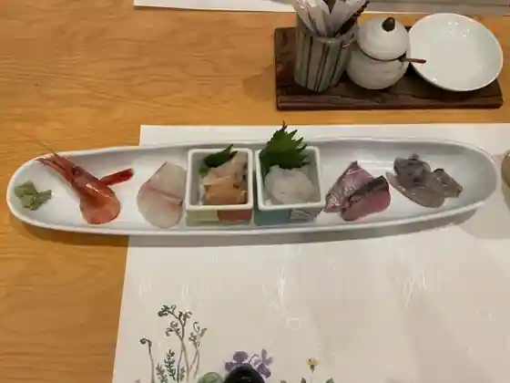
Yatsu Sun Tei
Sights
Uozu Maibotsu Hayashi Museum

Higashiyama Ento Bunsui So

Kintaro Onsen (Uozu)

Shinkiro (Shinkiro Tembo Chiten)

Umi no Eki Shinkiro
Miraju Land
Uozu Aquarium
Komasa Sushi
Uozu Maru Shokudo
Tasuke Sushi
Kome Sodo Hassho no Chi
Kitayama Kosen Niemon Ryokan (Kyumei : Niemon Ie)
Shinkawa Bunka Horu
Sushi Daimon
SPA BALNAGE (Hotel Guranmiraju)
ZAXFOX Kashi Kenkyusho /ZAXFOX Kaunta
KANATA WINERY
Mizu Dango Senmonten Tokichi
Shinkiro Rodo
Bai Meshi
Daikokuya Sushiten
Katagai Yama no Shu Campground
Matsukura Castle Ruins
Nakajima Orchard
Etchu Uozu Shiomon Ya Hamaoka Umi no Sachi
Tsuji Wakuwaku Land
Uozu Castle Ruins
Ariso Domu
Nagisa Haku Uozu Maru (STAY at WHARF UOZUMARU)
Hora Sugi
Aizen Me Experience (Aizen Me Ya aiya)
Kekachi Yama
Uozu Machinaka Rentaru EV (Toku Ru)
Hana Forest · Tenjin Yama Garden
Kitayama Kosen
Uozu Rentasaikuru (Mirakuru)
BOBO.
KININAL
Genshichi
Uozu Rekishi Minzoku Museum
Tenjin Yama Castle Ruins
Uozu Shrine
Mukaisanchi no Farm (Buruberii Kari Taiken Sono)
Workshop Yamasen Tsuji Hotoke Dan
Shinkawa Manabi no Mori Tenjin Yamako Ryu Kan
UO! JAZZ 2026 (Jantokoi Uozu Festival)
NOROSHI FARM no Chokubai Tokoro
Shoei Do Uozu Issho Iori
Uozu Shuzo
Mukaisanchi no Taiyaki
Ozaki Kamaboko Kan
Dai Town Kaigan Park
Masu Ho Castle Ruins
Sogagaku
Uozu Ekimae Inshokutengai (Kaki no Kiwari Ri "
Uozu General Park (Mira Park)
Uozu Momoyama Sports Park
Man Lighthouse
Hebiishi
Aizen Me Ya aiya
(infinity~mirage) Purojiekuto & Nazotoki Sutanpurarii
Uozu no Kombu Shime
Masu no Sushi
Otomo Iemochi no Kahi
Hotaruika
Kitayama Castle Ruins
Mochitsuki Experience (Genshichi)
Uozu Yakusho